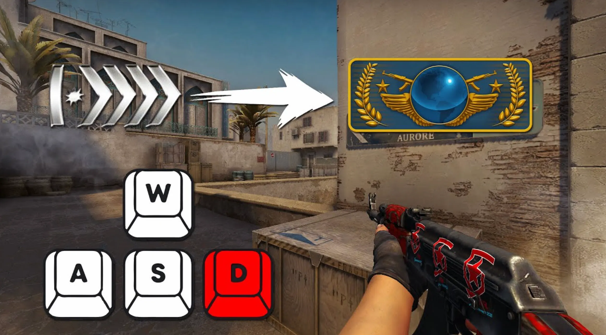

Master instant stopping for perfect accuracy in every engagement
Counter-strafing is the single most important mechanic in Counter-Strike 2 that every competitive player must master. It's the technique of instantly stopping your movement by tapping the opposite movement key, allowing you to shoot with perfect accuracy immediately. Without proper counter-strafing, your shots will be wildly inaccurate due to movement penalties.
In CS2, even the slightest movement causes significant accuracy loss. Simply releasing your movement key leaves you coasting with momentum for a brief moment. Counter-strafing eliminates this momentum instantly by applying force in the opposite direction, bringing your velocity to zero and restoring full accuracy.
Instant velocity cancellation through counter-strafing
The difference between counter-strafing and not counter-strafing is often the difference between winning and losing gunfights. Professional players counter-strafe in literally every engagement—it's so fundamental that it becomes unconscious muscle memory.
When you move in Counter-Strike 2, your character has velocity. Simply letting go of your movement key doesn't stop you instantly due to momentum. Your character continues sliding briefly. Counter-strafing works by pressing the opposite direction key, which applies immediate counterforce, canceling your velocity in milliseconds.
Timeline:
Result: Delayed shooting, missed opportunities
Timeline:
Result: Instant accurate shots, win duels
The tap duration is critical. You don't hold the opposite key—you tap it briefly. Holding too long causes you to start moving in the opposite direction, ruining your accuracy again. The goal is a quick tap that zeros your velocity without initiating movement.
Enable Velocity Display: Type "cl_showpos 1" in console to see your current velocity.
Goal: Your velocity should read close to 0.00 when you shoot.
Practice: Strafe left and right while watching velocity, counter-strafing to reach 0.
Shoot on Zero: Only fire when velocity is at or near zero for maximum accuracy.
The #1 mistake among beginners. Shooting while moving or just releasing the key without counter-strafing. This results in wildly inaccurate shots and lost gunfights you should win.
Holding the opposite key too long makes you start moving in the new direction. Your velocity goes from positive to negative, missing the zero point entirely. Quick taps only.
Shooting before velocity reaches zero. Even if you counter-strafe, firing too early still catches movement inaccuracy. Wait that extra millisecond for perfect accuracy.
Remembering in practice but forgetting during intense matches. Counter-strafing must become muscle memory through thousands of repetitions until it's automatic.
Rapidly alternating between A and D while counter-strafing perfectly at each direction change. This creates an unpredictable movement pattern while maintaining the ability to shoot accurately at any moment. Elite players can ADAD at high speed while landing shots consistently.
Usage: Dueling, holding angles, making yourself difficult to hit
Combining peeks with perfect counter-strafing. Strafe out from cover, counter-strafe the moment you spot an enemy, shoot accurately, then strafe back behind cover. This minimizes exposure time while maintaining offensive pressure.
Usage: Aggressive peeks, information gathering, trading kills
Wide peeking at full speed, then counter-strafing the instant you see an enemy. The combination of peekers advantage and instant accurate shots makes this extremely deadly. Your opponent sees you later and you're already shooting accurately.
Usage: Entry fragging, catching off-guard enemies, aggressive plays
Critical Importance: Rifles have severe movement inaccuracy. Counter-strafing is absolutely mandatory for rifles. Even slight movement makes bullets spray wildly.
Technique: Sharp, quick counter-strafe taps. Wait for complete stop before shooting.
More Forgiving: SMGs and pistols have better movement accuracy, but counter-strafing still improves effectiveness significantly.
Technique: Can be less precise but still benefits from proper counter-strafing, especially at range.
Recoil Master: Has dedicated counter-strafe training with visual feedback
Aim Botz: Perfect for combining counter-strafe with target acquisition
Fast Aim/Reflex Training: Adds time pressure to counter-strafe practice
Yprac Arena: Real-world scenarios requiring counter-strafing
When holding an angle, slight ADAD movements keep you mobile. The instant an enemy appears, counter-strafe and shoot. This gives you movement advantage while maintaining instant-response capability.
As an entry fragger, you're constantly peeking and counter-strafing. Peek an angle at speed, counter-strafe when you spot someone, get the kill, continue to next angle. Speed and accuracy combined.
In clutch scenarios, movement efficiency is critical. Counter-strafing allows you to check angles quickly while maintaining ability to shoot accurately if threats appear. Every millisecond saved matters.
Counter-Strike 2 introduced the subtick system, which affects counter-strafing mechanics:
Watch any professional player's POV and you'll notice they counter-strafe in literally every single engagement. It's so ingrained that they do it unconsciously, even when unnecessary. This level of automation frees mental resources for tactics, positioning, and decision-making. Your goal should be to reach this same level of unconscious competence.
Track your counter-strafe improvement:
Counter-strafing is not optional—it's mandatory for competitive CS2. Spend dedicated practice time every single day until it becomes as natural as breathing. The pros make it look easy because they've done it millions of times. You need to do the same. There are no shortcuts. Practice, practice, practice.